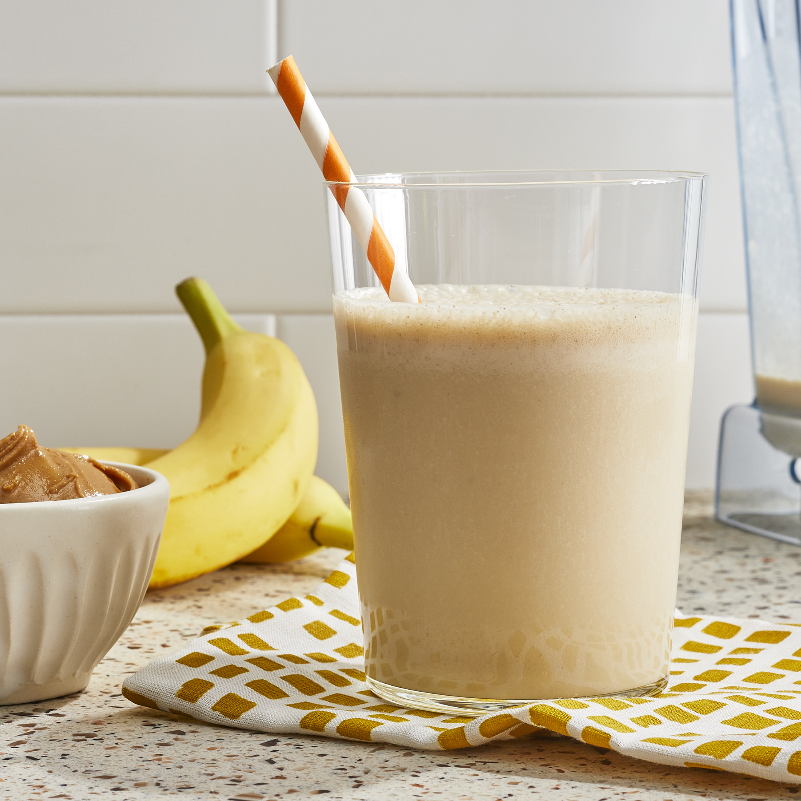

Menu
Peanutbutter Banana Smoothie

This Peanut Butter Banana Smoothie is a healthy recipe that’s perfect for breakfast, or an easy snack on-the-go. The texture reminds me of a milkshake!
Ingredients
- 1/2 cup water or almond milk
- 1 frozen banana , cut into pieces
- 2 tablespoons all-natural peanut butter
- 1 tablespoon ground flax seeds
- 1/2 teaspoon vanilla extract
- ice , if needed to thicken
Steps
- In a blender, combine the water, banana, peanut butter, flax seeds, and vanilla. Blend until very smooth, stopping to scrape down the blender as needed. If you need a little more liquid, add it just 1 tablespoon at a time so the smoothie with have a thick, milkshake-like texture. (If you end up adding too much liquid, you can always add a handful of ice cubes to thicken it up again-- it will just dilute the flavor slightly.)
- Taste the smoothie and adjust any flavoring to taste. If you need a sweeter flavor, you can add one pitted Medjool date or a tablespoon of honey. Serve right away!